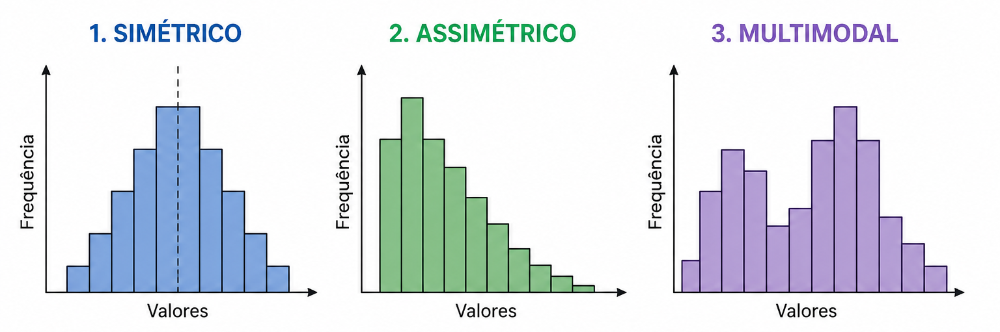

---
config:
theme: dark
---
graph LR
A["Dados"] --> B["Padrão<br>normal"]
B --> C["Pontos<br>estranhos"]
C --> D["Investigação"]
style A fill:#44475a,color:#f8f8f2
style B fill:#8be9fd,color:#282a36
style C fill:#ff5555,color:#282a36
style D fill:#f1fa8c,color:#282a36
Revisão: o que a aula anterior ensinou
K-Means agrupa por centroides.
Clustering hierárquico mostra estrutura por dendrograma.
DBSCAN agrupa por densidade.
DBSCAN marca alguns pontos como ruído (label = -1).
Esses pontos de ruído são lixo... ou podem ser os casos mais importantes?
Motivação: quando o estranho importa
Compra muito fora do padrão no cartão de crédito.
Login em horário e local incomum.
Paciente com exame muito diferente da população.
Máquina com comportamento anormal antes de uma falha.
Uma anomalia não é necessariamente erro. Pode ser fraude, falha, descoberta ou
evento raro.
Outlier, ruído, anomalia e erro
| Conceito |
Definição |
Exemplo |
| Outlier |
Ponto estatisticamente distante |
renda muito alta |
| Ruído |
Ponto que não se encaixa no padrão do algoritmo |
label = -1 no DBSCAN |
| Anomalia |
Ponto incomum com significado prático |
transação suspeita |
| Erro |
Valor inválido ou falha de registro |
idade = 300 |
Todo erro pode parecer anomalia, mas nem toda anomalia é erro.
Problema central
Como saber se um ponto é estranho?
Depende de:

Contexto — o que é "normal" neste domínio?
Distribuição dos dados — simétrica, assimétrica, multimodal?
Relação entre variáveis — combinações inesperadas.
Custo do erro — falso positivo ou falso negativo?
Objetivo — detecção, investigação ou limpeza?
Gastar R$ 2.000 pode ser normal para um cliente e anômalo para outro.
Métodos univariados
Z-score: quantos desvios-padrão um valor está da média?
IQR: intervalo interquartil — base do boxplot.
Boxplot: visualização com limites estatísticos.
Métodos univariados são simples e úteis, mas não capturam relações entre
variáveis.
Z-score
Quantos desvios-padrão um valor está distante da média?
\(z = \frac{x - \bar{x}}{s}\)
z = (x - x.mean()) / x.std()
anomalias = abs(z) > 3
Z-score: visualizando a distribuição
Regiões vermelhas: \(|z| > 3\) — menos de 0,3% dos dados em distribuição normal.
IQR e boxplot
\(IQR = Q_3 - Q_1\)
\(\text{limite}_{\text{inf}} = Q_1 - 1{,}5 \times IQR\)
\(\text{limite}_{\text{sup}} = Q_3 + 1{,}5 \times IQR\)
q1 = dados["gasto_mensal"].quantile(0.25)
q3 = dados["gasto_mensal"].quantile(0.75)
iqr = q3 - q1
lim_inf = q1 - 1.5 * iqr
lim_sup = q3 + 1.5 * iqr
anomalias = dados[
(dados["gasto_mensal"] < lim_inf) | (dados["gasto_mensal"]> lim_sup)
]
IQR: quartis e limites visualizados
Roxo = IQR, vermelho = limites de detecção, X = outliers.
Limitação dos métodos univariados
Nenhuma variável isolada parece absurda, mas a combinação é estranha:
Cliente com gasto baixo, mas número enorme de compras.
Cliente com gasto alto, mas pouquíssimas compras.
Sensor com temperatura aceitável, mas pressão incompatível.
Algumas anomalias só aparecem quando olhamos várias variáveis ao mesmo tempo.
DBSCAN como detector de anomalias
from sklearn.cluster import DBSCAN
modelo = DBSCAN(eps=0.5, min_samples=5)
labels = modelo.fit_predict(X)
anomalias = labels == -1
-1 indica ruído.
Ruído pode ser interpretado como candidato a anomalia.
Depende muito de eps e min_samples.
Não funcion
DBSCAN: vantagens e limitações
Vantagens
- Detecta pontos fora de regiões densas.
- Não exige número de clusters.
- Detecta formas arbitrárias.
Limitações
- Sensível a parâmetros.
- Ruim quando existem densidades muito diferentes.
- Difícil em alta dimensionalidade.
- Pode marcar minorias legítimas como ruído.
Isolation Forest — intuição
Pontos anômalos são mais fáceis de isolar com cortes aleatórios.
Ponto isolado → poucos cortes
Ponto normal → muitos cortes
Isolation Forest: cortes aleatórios na prática
O ponto vermelho no canto é isolado em apenas 2 cortes. Os pontos azuis no centro precisam de muito mais.
Isolation Tree: estrutura da árvore
Folha rasa (h=2) = ponto isolado rápido = anômalo. Folha profunda (h=3+) = ponto normal.
Score de anomalia \(s(x, n)\)
Para cada ponto \(x\), mede-se o caminho \(h(x)\) até ser isolado. A média sobre
\(t\) árvores é \(E(h(x))\).
\(E(h(x)) = \frac{1}{t} \sum_{i=1}^{t} h_i(x)\)
O fator de normalização \(c(n) = 2H(n-1) - \frac{2(n-1)}{n}\) ajusta pelo tamanho da subamostra.
Fórmula final do score
\(s(x, n) = 2^{\large -\frac{E(h(x))}{c(n)}}\)
| Valor |
Interpretação |
| \(s \to 1\) |
anômalo — \(E(h(x)) \ll c(n)\) |
| \(s \approx 0{,}5\) |
normal — \(E(h(x)) \approx c(n)\) |
| \(s \to 0\) |
muito normal — \(E(h(x)) \gg c(n)\) |
Isolation Forest: distribuição dos scores
Anomalias reais (vermelho) concentram nos scores mais altos. A linha amarela é o threshold.
Passo a passo do Isolation Forest
1. Para cada árvore, sorteie uma subamostra pequena dos dados: $ \psi \approx 256 $.
2. Em cada nó, escolha aleatoriamente uma variável e um ponto de corte (mínimo, máximo).
3. Repita os cortes até isolar pontos ou atingir a profundidade máxima.
4. Para cada ponto \(x\), calcule o caminho médio até uma folha: \(E(h(x))\).
5. Caminho curto \(\Rightarrow\) fácil de isolar \(\Rightarrow\) maior chance de
anomalia.
Isolation Forest — código
from sklearn.ensemble import IsolationForest
modelo = IsolationForest(
contamination=0.05,
random_state=42
)
pred = modelo.fit_predict(X)
anomalias = pred == -1
contamination = proporção esperada de anomalias nos dados.
Local Outlier Factor (LOF) — intuição
Um ponto é suspeito se está em uma região muito menos densa que seus vizinhos.
LOF: k-vizinhos mais próximos
O ponto vermelho (p) está na região esparsa. Seus k=5 vizinhos estão todos longe → k-distância grande.
LOF: comparando densidade local
O ponto vermelho está entre duas regiões: menos denso que os vizinhos da região densa → LOF alto.
LOF: passo a passo
1. Para cada ponto \(p\), encontre seus \(k\) vizinhos mais próximos: \(N_k(p)\).
2. Meça a “densidade local” de \(p\): vizinhos próximos
3. Compare essa densidade com a densidade dos vizinhos de \(p\).
4. Se \(p\) for muito menos denso que seus vizinhos, seu \(\text{LOF}_k(p)\) será alto.
5. \(\text{LOF} \approx 1\): normal. \(\text{LOF} \gg 1\): possível anomalia.
LOF: fator de outlier local
\(\text{LOF}_k(p) = \frac{\sum_{o \in N_k(p)}
\text{LRD}_k(o)}{|N_k(p)| \cdot \text{LRD}_k(p)}\)
| Valor |
Interpretação |
| \(\text{LOF} \approx 1\) |
densidade similar aos vizinhos → normal |
| \(\text{LOF} > 1\) |
região menos densa → candidato a outlier |
| \(\text{LOF} < 1\) |
região mais densa → ponto interno ao cluster |
Na prática $ LOF_k(p) $ é o quão menos denso $ p $ é comparado aos seus vizinhos. Quanto mais alto, mais suspeito.
LOF: código e comparação
from sklearn.neighbors import LocalOutlierFactor
modelo = LocalOutlierFactor(
n_neighbors=20,
contamination=0.05
)
pred = modelo.fit_predict(X)
anomalias = pred == -1
DBSCAN cria clusters e marca ruído. LOF compara densidade local — não cria clusters.
One-Class SVM — intuição
O One-Class SVM aprende uma fronteira ao redor dos dados normais — pontos fora são anomalias.
Kernel RBF → fronteira não-linear
Support vectors → borda da região normal
One-Class SVM: fronteira de decisão
O kernel RBF mapeia os dados para um espaço de alta dimensão onde uma hiperesfera separa dados normais de anomalias.
\(f(x) = \text{sign}\!\left(\sum_{i=1}^{n} \alpha_i \, K(x_i, x) - \rho\right)\)
| Componente |
Significado |
| \(K(x_i, x)\) |
similaridade via kernel RBF entre \(x\) e suporte \(x_i\) |
| \(\alpha_i\) |
peso de cada suporte (maioridade = 0) |
| \(\rho\) |
limiar de decisão (offset) |
| \(f(x) > 0\) |
normal — dentro da fronteira |
| \(f(x) < 0\) |
anomalia — fora da fronteira |
One-Class SVM: passo a passo
1. Use dados majoritariamente normais para treinar o modelo.
2. Aplique um kernel, como RBF, para permitir uma fronteira não linear.
3. Encontre os pontos que definem a borda da região normal: os support vectors.
4. Calcule, para cada novo ponto \(x\), sua similaridade ponderada com os support vectors.
5. Se o score ficar abaixo do limiar, \(x\) é marcado como anomalia.
One-Class SVM — código
from sklearn.svm import OneClassSVM
modelo = OneClassSVM(
kernel='rbf',
gamma='auto',
nu=0.05
)
modelo.fit(X_train_normal)
pred = modelo.predict(X_test)
anomalias = pred == -1
nu = proporção máxima de outliers aceita.
Treinamos com dados normais (benigno) e detectamos malignos como anomalias.
Comparação dos métodos
| Método |
Tipo |
Ponto forte |
Limitação |
| Z-score |
univariado |
simples |
assume distribuição aproximadamente normal |
| IQR |
univariado |
robusto e visual |
não captura relações entre variáveis |
| DBSCAN |
densidade |
detecta ruído e clusters arbitrários |
sensível a parâmetros |
| Isolation Forest |
isolamento |
bom em dados multivariados |
exige estimar contaminação |
| LOF |
densidade local |
detecta anomalias locais |
sensível ao número de vizinhos |
| One-Class SVM |
fronteira |
fronteira não-linear via kernel |
sensível a parâmetros kernel/nu |
Falso positivo e falso negativo
Falso positivo: marcou como anomalia, mas era normal.
Falso negativo: deixou passar uma anomalia real.
| Contexto |
Falso positivo |
Falso negativo |
| Fraude |
bloquear compra legítima |
liberar fraude |
| Sensor |
parar máquina sem necessidade |
ignorar falha real |
| Saúde |
pedir exame extra desnecessário |
ignorar caso grave |
Em qual caso o falso positivo é pior? Em qual o falso negativo é pior?
Atividade: Detectando clientes anômalos
Dataset sintético com duas variáveis:
gasto_mensal — valor médio gasto por mês.
numero_compras — quantidade de compras no período.
Gerar dados normais, inserir pontos anômalos, aplicar IQR, DBSCAN, Isolation
Forest e LOF, e comparar resultados.
Gerando o dataset
import numpy as np
import pandas as pd
import matplotlib.pyplot as plt
np.random.seed(42)
n_normal = 300
normais = pd.DataFrame({
"gasto_mensal": np.random.normal(500, 120, n_normal),
"numero_compras": np.random.normal(12, 3, n_normal)
})
anomalias = pd.DataFrame({
"gasto_mensal": [1200, 1400, 100, 1600, 80],
"numero_compras": [2, 3, 40, 1, 45]
})
dados = pd.concat([normais, anomalias], ignore_index=True)
plt.scatter(dados["gasto_mensal"], dados["numero_compras"])
plt.xlabel("Gasto mensal")
plt.ylabel("Número de compras")
plt.title("Clientes: comportamento normal e anômalo")
plt.show()
Visualizando as anomalias detectadas
plt.scatter(
dados["gasto_mensal"],
dados["numero_compras"],
label="Normal"
)
plt.scatter(
dados.loc[anomalias_detectadas, "gasto_mensal"],
dados.loc[anomalias_detectadas, "numero_compras"],
label="Anomalia",
marker="x",
s=100
)
plt.xlabel("Gasto mensal")
plt.ylabel("Número de compras")
plt.legend()
plt.show()
Entrega
Aplicar pelo menos dois métodos de detecção de anomalias.
Gerar gráfico destacando os pontos anômalos.
Comparar quantas anomalias cada método detectou.
Escrever uma interpretação curta:
"Os pontos detectados parecem erro, evento raro ou caso importante?"
Fechamento
Em Ciência de Dados, o ponto estranho pode ser ruído, erro ou descoberta. O
algoritmo encontra candidatos; a interpretação depende do contexto.
Classificação
Prevê classes.
Clustering
Descobre grupos.
Anomaly Detection
Encontra casos incomuns.